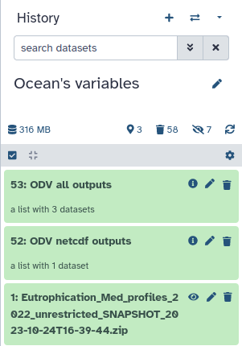

Through this tutorial, you will learn in the first part how to import, visualise, and extract data from an ODV collection by using the ODV Galaxy interactive tool.
In the second part, you will learn how to use DIVAnd using the inputs the outputs from ODV.
Ocean Data View (ODV) is a software package for the interactive exploration, analysis and visualization of oceanographic and other geo-referenced profile, time-series, trajectory,
or sequence data. To know more about ODV go check the official page
DIVAnd (Data-Interpolating Variational Analysis in n dimensions) performs an n-dimensional variational analysis/gridding of arbitrarily located observations.
Observations will be interpolated/analyzed on a curvilinear grid in 1, 2, 3 or more dimensions. See the official page
The data here are Mediterranean Sea - Eutrophication and Acidity aggregated datasets
EMODnet Chemistry aims to provide access to marine chemistry datasets and derived data products concerning eutrophication, acidity, and contaminants. The importance of the selected substances and other parameters relates to the Marine Strategy Framework Directive (MSFD). This aggregated dataset contains all unrestricted EMODnet Chemistry data on eutrophication and acidity and covers the Mediterranean Sea. Data were aggregated and quality controlled by the ‘Hellenic Centre for Marine Research, Hellenic National Oceanographic Data Centre (HCMR/HNODC)’ in Greece. To get more ODV collection and other data please search the sextant catalogue or the EMODnet Chemistry catalogue.
ITS-90 water temperature and water body salinity variables have also been included (‘as are’) to complete the eutrophication and acidity data. If you use these variables for calculations, please refer to SeaDataNet for the quality flags: https://www.seadatanet.org/Products/Aggregated-datasets.
Regional datasets concerning eutrophication and acidity are automatically harvested, and the resulting collections are aggregated and quality-controlled using ODV Software and following a common methodology for all sea regions Lipizer et al. 2023. Parameter names are based on P35 vocabulary, which relates to EMODnet Chemistry aggregated parameter names and is available at: https://vocab.nerc.ac.uk/search_nvs/P35/.
When not present in the original data, water body nitrate plus nitrite was calculated by summing all nitrate and nitrite parameters. The same procedure was applied for water body dissolved inorganic nitrogen (DIN), which was calculated by summing all nitrate, nitrite, and ammonium parameters. Concentrations per unit mass were converted to a unit volume using a constant density of 1.025 kg/L. Hellenic Centre for Marine Research, Hellenic National Oceanographic Data Centre (HCMR/HNODC) 2022
Hands-on: Choose Your Own Tutorial
This is a "Choose Your Own Tutorial" section, where you can select between multiple paths. Click one of the buttons below to select how you want to follow the tutorial
Do you want to run the workflow or to discover the tools one by one ?
Manage your data
Hands-on: Prepare your history
Create a new history for this tutorial and give it a name (for example “Ocean’s variables”) for you to find it again later if needed.
To create a new history simply click the new-history icon at the top of the history panel:
Import an ODV collection as a zip folder.
Use this link https://github.com/fair-ease/Data-for-Galaxy-/raw/main/Eutrophication_Med_profiles_2022_unrestricted_SNAPSHOT_2023-10-24T16-39-44.zip in the folowing instructions.
And Name it Eutrophication_Med_profiles_2022_unrestricted_SNAPSHOT_2023-10-24T16-39-44.zip
Copy the link location
Click galaxy-uploadUpload Data at the top of the tool panel
Click galaxy-uploadUpload Data at the top of the tool panel
Select galaxy-wf-editPaste/Fetch Data
Paste the link(s) into the text field
Press Start
Close the window
Check that the file is in netcdf !
Click on the galaxy-pencilpencil icon for the dataset to edit its attributes
In the central panel, click galaxy-chart-select-dataDatatypes tab on the top
In the galaxy-chart-select-dataAssign Datatype, select nectdf from “New type” dropdown
Tip: you can start typing the datatype into the field to filter the dropdown menu
Click the Save button
Import and launch the workflow
Hands-on: Import the workflow
Click on Workflow on the top menu bar of Galaxy. You will see a list of all your workflows.
Option 1: use the URL
- Click on galaxy-upload Import at the top-right of the screen
- Paste the URL of the workflow into the box labelled “Archived Workflow URL” https://earth-system.usegalaxy.eu/u/marie.josse/w/oceans-var-v2
Option 2: use the workflow name
- Click on Public workflows at the top-right of the screen
Search for Ocean’s variables 2.0
In the workflow preview box click on galaxy-upload Import
Click the Import workflow button
Hands-on: Run the workflow
Click on Workflow on the top menu bar of Galaxy. You will see a list of all your workflows.
Click on the workflow-run (Run workflow) button next to your workflow
/!\ Select Yes for Workflow semi automatic
Configure the workflow as needed with the 2 datasets you uploaded right before (Eutrophication_Med_profiles_2022_unrestricted_SNAPSHOT_2023-10-24T16-39-44.zip and gebco_30sec_8.nc
Click the Run Workflow button at the top-right of the screen
You may have to refresh your history to see the queued jobs
Workflow human in the loop
Now you’ve got your workflow running, however this workflow is composed of both interactive and non interactive tools. Thus, for the interactive tools we need you !
Ocean Data view: Managing an interactive tool
ODV is now integrated in Galaxy as an interactive tool. This kind of tool works differently than classical tools as it allows the user to interact interactively with your data.
This kind of tool is used to give access to Jupyter Notebooks, RStudio or R Shiny apps for example.
To use ODV, you need to use the dedicated form, you can specify input datasets from your history you want to use in ODV,
then press the execute button to launch an ODV instance. When the graphical user interface of ODV is ready to be used, a URL will be displayed at the top of the
Galaxy center panel. If you don’t see it, you can see and access it through the “Active InteractiveTools” space of the “User” menu or you can click on galaxy-eye on
the tool in the history.
Once you finish your work on ODV, if you want to retrieve data and/or the entire project, you need to save files in ODV/galaxy/outputs, then quit ODV properly through
the “Project” Menu tab.
To get in the interactive tool do the folowing
Go to User > Active InteractiveTools
Wait for the ODV to be running (Job Info)
Click on ODV
Visualise your Data
You can expand the ODV left panel (where there are 3 dots, vertically) to access the “clipboard” menu and paste the content you want to paste on an ODV form. From there you can copy-paste everything from one side to the other. Then, click outside of this panel to collapse it.
If at one point your ODV interface becomes grey with a red panel on the top “X ODV - Disconnected”, do NOT panic ;) you just need to reload your tab (circular arrow top left)
Hands-on: Loading data
Click on close of the pop-up screen for the check for Updates
Go the top left and click on File, then on Open…
On the pop-up screen on the left panel select ODV, then the folder galaxy, then data.
You should see a folder open it (double clicking)
Select the file with a .odv extension
Click on Open in the bottom right
There your data should be opening an you can now visualise them!
What are the longitude and latitude of the red dot?
On the to right window you can read Longitude 34°E and Latitude 32.332°N.
Subset Data
Hands-on: Create a subset
On the left smaller map right click and select Zoom
Then move your cursor on the map you should see a red rectangle moving along
Reduce the rectangular to have the selection you want on the map. It can be something similar to the following image (no need to be exactly the same)
Once you’re happy with your selection click on Enter on your keyboard.
Here you have created a a subset of your data.
Go to the central map
Click right and select Properties…
For example, make your data dots bigger in “Display Style” increase the number below “Symbol Size” to 50, and click OK
You can now see bigger dots representing your data.
If you already saved it once you just have to click left on the save icon (top left) when it’s red.
Save Data
Hands-on: Choose Your Own Tutorial
This is a "Choose Your Own Tutorial" section, where you can select between multiple paths. Click one of the buttons below to select how you want to follow the tutorial
Here you can choose if you want to save your view as an ODV view in xview format (you will not able to directly visualise it on Galaxy) or if you want to save it in png which you can visualise on Galaxy.
Hands-on: Save your subset view
On the top left of your screen, you can see a red save button. Right-click on it.
In the pop-up screen go to the folder ODV, galaxy, outputs.
In File name rename your view (for example Eutrophication_Med_profiles_2022_unrestricted_SNAPSHOT_2023-10-24T16-39-44), and Save.
Hands-on: Save your subset map
Click right on the map and select Save Plot As…
In the pop-up screen go to the folder ODV, galaxy, outputs.
In File name rename your view (for example Eutrophication_Med_profiles_2022_unrestricted_SNAPSHOT_2023-10-24T16-39-44)
In Files of type select PNG (*.png *.PNG) and Save then OK and OK.
Hands-on: Extract your variables in netcdf data
Now we want to extract and save the right parameters of your data in netcdf format.
Go to the the left and click on Export, Data and NetCDF File…
In the pop-up screen go to the folder ODV, galaxy, outputs.
Click Save
A new pop-up window opens “Select Extended Metadata Variables for Export” Let the 56 items selected and click OK
“Select Data Variables for Export” here you need to select 1: Depth[m], ̀4: Water body dissolved oxygen concentration [umol/l], 6: Water body phosphate [umol/l] and click OK
“NetCDF File Properties” change the Longitude range to [-180 ... 180] degrees_E, then select Export metadata quality flags and Export data quality flags and OK.
And OK again
You now know how to export and save the right variables on ODV to netCDF data.
Now, if you have finished with your analysis you can exit ODV. To do so you need to do it properly.
Hands-on: Exit ODV and go back on Galaxy
On the top left click on File select Exit
If you want to save the other window also click on Yes. Here we don’t need it so click No.
You can now go back to your Galaxy instance.
DIVAnd: Data-Interpolating Variational Analysis in n dimensions
You can see now in your Galaxy history that ODV turned green and that the folowing step launched itself.
This tool DIVAnd is not interactive. It will create a climatology in netcdf that will then be used as input in the next step which is ODV again.
Once, DIVAnd finished ODV get started and there we need you again !
BONUS: Even more ODV
Do you want to go even further and visualise your new netcdf data? (Because this tutorial is fascinating and you want to keep reading ;))
Hands-on: Open your Netcdf data in ODV
Go to User > Active InteractiveTools
Wait for the ODV to be running (Job Info)
Click on ODV
Click on close of the pop-up screen for the check for Updates
Go the top left and click on File, then on Open…
On the pop-up screen on the left panel select ODV, then the folder galaxy, then data.
You should see a file open it (double clicking)
Click on Open in the bottom right. Then click on Next until you can click on Finish you can keep everything by default.
There your data should be opening and you can now visualise them!
Hands-on: Visualise your Phosphate variable
Go on the big + on the top left
Select “1 SURFACE Window”
Press right on the new plot and select Properties…
In the tab “Display Style” increase the “Symbol size” to 22 for instance
In the tab “Color Mapping” increase the level of the “Median” part and lower the “Nonlinearity” such as in the following picture
Then, click on OK, and you can see the Phosphate repartition.
Click right on the map and select Save Plot As…
In the pop-up screen go to the folder ODV, galaxy, outputs.
In Files of type select PNG (*.png *.PNG) and Save then OK and OK.
If you want to have a visualisation of the Phosphate according to the depth, you can do the following.
Go on the big + on the top left
Select “1 STATION Window” in the new tab, in the plot press enter on your keyboard.
Same as before to save it, click right on the map and select Save Plot As…
In Files of type select PNG (*.png *.PNG) and Save then OK and OK.
You can now safely exit ODV.
On the top left click on File select Exit
If you want to save the other window also click on Yes. Here we don’t need it so click No.
Managing ODV Galaxy interactive tool
ODV is now integrated in Galaxy as an interactive tool. This kind of tool works differently than classical tools as it allows the user to interact interactively with your data.
This kind of tool is used to give access to Jupyter Notebooks, RStudio or R Shiny apps for example.
To use ODV, you need to use the dedicated form, you can specify input datasets from your history you want to use in ODV,
then press the execute button to launch an ODV instance. When the graphical user interface of ODV is ready to be used, a URL will be displayed at the top of the
Galaxy center panel. If you don’t see it, you can see and access it through the “Active InteractiveTools” space of the “User” menu or you can click on galaxy-eye on
the tool in the history.
Once you finish your work on ODV, if you want to retrieve data and/or the entire project, you need to save files in ODV/galaxy/outputs, then quit ODV properly through
the “Project” Menu tab.
You can come back to where you left off the tutorial anytime by clicking level.
Hands-on: Log in to Galaxy
Open your favorite browser (Chrome, Safari or Firefox as your browser, not Internet Explorer!)
The first time you use Galaxy, there will be no files in your history panel.
Hands-on: Deploy your own ODV instance
Create a new history for this tutorial and give it a name (for example “Ocean’s variables”) for you to find it again later if needed.
To create a new history simply click the new-history icon at the top of the history panel:
Import an ODV collection as a zip folder.
Use this link https://github.com/fair-ease/Data-for-Galaxy-/raw/main/Eutrophication_Med_profiles_2022_unrestricted_SNAPSHOT_2023-10-24T16-39-44.zip in the folowing instructions.
And Name it Eutrophication_Med_profiles_2022_unrestricted_SNAPSHOT_2023-10-24T16-39-44.zip
Copy the link location
Click galaxy-uploadUpload Data at the top of the tool panel
Select galaxy-wf-editPaste/Fetch Data
Paste the link(s) into the text field
Press Start
Close the window
Ocean Data View with the following parameters:
“Select if you are using an ODV collection in a zip folder or if you have your own raw data”: The data you are using are an ODV collection in a zip folder
“ODV collection in a zip folder.”: Eutrophication_Med_profiles_2022_unrestricted_SNAPSHOT_2023-10-24T16-39-44.zip
Click on Run Tool
Go to User > Active InteractiveTools
Wait for the ODV to be running (Job Info)
Click on ODV
Ocean Data View
Visualise your Data
You can expand the ODV left panel (where there are 3 dots, vertically) to access the “clipboard” menu and paste the content you want to paste on an ODV form. From there you can copy-paste everything from one side to the other. Then, click outside of this panel to collapse it.
If at one point your ODV interface becomes grey with a red panel on the top “X ODV - Disconnected”, do NOT panic ;) you just need to reload your tab (circular arrow top left)
Hands-on: Loading data
Click on close of the pop-up screen for the check for Updates
Go the top left and click on File, then on Open…
On the pop-up screen on the left panel select ODV, then the folder galaxy, then data.
You should see a folder open it (double clicking)
Select the file with a .odv extension
Click on Open in the bottom right
There your data should be opening an you can now visualise them!
Question
What are the longitude and latitude of the red dot?
On the to right window you can read Longitude 34°E and Latitude 32.332°N.
Subset Data
Hands-on: Create a subset
On the left smaller map right click and select Zoom
Then move your cursor on the map you should see a red rectangle moving along
Reduce the rectangular to have the selection you want on the map. It can be something similar to the following image (no need to be exactly the same)
Once you’re happy with your selection click on Enter on your keyboard.
Here you have created a a subset of your data.
Go to the central map
Click right and select Properties…
For example, make your data dots bigger in “Display Style” increase the number below “Symbol Size” to 50, and click OK
You can now see bigger dots representing your data.
If you already saved it once you just have to click left on the save icon (top left) when it’s red.
Save Data
Hands-on: Choose Your Own Tutorial
This is a "Choose Your Own Tutorial" section, where you can select between multiple paths. Click one of the buttons below to select how you want to follow the tutorial
Here you can choose if you want to save your view as an ODV view in xview format (you will not able to directly visualise it on Galaxy) or if you want to save it in png which you can visualise on Galaxy.
Hands-on: Save your subset view
On the top left of your screen, you can see a red save button. Right-click on it.
In the pop-up screen go to the folder ODV, galaxy, outputs.
In File name rename your view (for example Eutrophication_Med_profiles_2022_unrestricted_SNAPSHOT_2023-10-24T16-39-44), and Save.
Hands-on: Save your subset map
Click right on the map and select Save Plot As…
In the pop-up screen go to the folder ODV, galaxy, outputs.
In File name rename your view (for example Eutrophication_Med_profiles_2022_unrestricted_SNAPSHOT_2023-10-24T16-39-44)
In Files of type select PNG (*.png *.PNG) and Save then OK and OK.
Hands-on: Extract your variables in netcdf data
Now we want to extract and save the right parameters of your data in netcdf format.
Go to the the left and click on Export, Data and NetCDF File…
In the pop-up screen go to the folder ODV, galaxy, outputs.
Click Save
A new pop-up window opens “Select Extended Metadata Variables for Export” Let the 56 items selected and click OK
“Select Data Variables for Export” here you need to select 1: Depth[m], ̀4: Water body dissolved oxygen concentration [umol/l], 6: Water body phosphate [umol/l] and click OK
“NetCDF File Properties” change the Longitude range to [-180 ... 180] degrees_E, then select Export metadata quality flags and Export data quality flags and OK.
And OK again
You now know how to export and save the right variables on ODV to netCDF data.
Now, if you have finished with your analysis you can exit ODV. To do so you need to do it properly.
Hands-on: Exit ODV and go back on Galaxy
On the top left click on File select Exit
If you want to save the other window also click on Yes. Here we don’t need it so click No.
You can now go back to your Galaxy instance.
Now, after waiting for everything to turn green in your history, you can see 2 new outputs

In the history panel in the output ODV all outputs click on the galaxy-eye (eye) icon of your output.
You can now visualize the outputs in Galaxy middle panel.
DIVAnd: Data-Interpolating Variational Analysis in n dimensions
Go to your output ‘data_from_Eutrophication_Med_profiles_2022_unrestricted’
Check if the datatype is netcdf if not :
Click on the galaxy-pencilpencil icon for the dataset to edit its attributes
In the central panel, click galaxy-chart-select-dataDatatypes tab on the top
In the galaxy-chart-select-dataAssign Datatype, select your desired datatype from “New type” dropdown
Tip: you can start typing the datatype into the field to filter the dropdown menu
Click the Save button
Hands-on: Choose Your Own Tutorial
This is a "Choose Your Own Tutorial" section, where you can select between multiple paths. Click one of the buttons below to select how you want to follow the tutorial
If you want the easiest tutorial possible choose New user. If you feel that you need more flexibility on the DIVAnd parameters choose Experimented user.
You chose New user ! Thus, you’ll be running a batch tool, you just have to fill in the input like explained below.
In the first ‘outputs’ folder (at the root of the Jupyterlab folders), you should now have one netcdf file “Water_body_Phosphate_Mediterranean”.
So, you can now properly close the Jupyter notebook.
On the top left click on files and then on Shut down.
Go back to your Galaxy instance.
After a couple of minutes, your outputs should appear in your Galaxy history.
BONUS: Even more ODV
Do you want to go even further and visualise your new netcdf data? (Because this tutorial is fascinating and you want to keep reading ;))
Hands-on: Open your Netcdf data in ODV
Ocean Data View with the following parameters:
“Select if you are using an ODV collection in a zip folder or if you have your own raw data”: The data you are using are Netcdf or text tabular files
“Netcdf or tabular text file. For text file, odv format is recommanded.”: DIVAnd netcdf outputs (output of DIVAndtool)
Click on Run Tool
Go to User > Active InteractiveTools
Wait for the ODV to be running (Job Info)
Click on ODV
Click on close of the pop-up screen for the check for Updates
Go the top left and click on File, then on Open…
On the pop-up screen on the left panel select ODV, then the folder galaxy, then data.
You should see a file open it (double clicking)
Click on Open in the bottom right. Then click on Next until you can click on Finish you can keep everything by default.
There your data should be opening and you can now visualise them!
Hands-on: Visualise your Phosphate variable
Go on the big + on the top left
Select “1 SURFACE Window”
Press right on the new plot and select Properties…
In the tab “Display Style” increase the “Symbol size” to 22 for instance
In the tab “Color Mapping” increase the level of the “Median” part and lower the “Nonlinearity” such as in the following picture
Then, click on OK, and you can see the Phosphate repartition.
Click right on the map and select Save Plot As…
In the pop-up screen go to the folder ODV, galaxy, outputs.
In Files of type select PNG (*.png *.PNG) and Save then OK and OK.
If you want to have a visualisation of the Phosphate according to the depth, you can do the following.
Go on the big + on the top left
Select “1 STATION Window” in the new tab, in the plot press enter on your keyboard.
Same as before to save it, click right on the map and select Save Plot As…
In Files of type select PNG (*.png *.PNG) and Save then OK and OK.
You can now safely exit ODV.
On the top left click on File select Exit
If you want to save the other window also click on Yes. Here we don’t need it so click No.
Conclusion
Great you now know how to extract ocean variables from an ODV collection and use these extracted data in DIVAnd.
From there you can grid the phosphate variable on the subset extracted create a netcdf file and visualise it on ODV again.
We finished with the last results visible on the galaxy instance in the output ODV all outputs :
Extra information
Coming up soon even more tutorials on and other Earth-System related trainings. Keep an galaxy-eye open if you are interested!
You've Finished the Tutorial
Please also consider filling out the Feedback Form as well!
Hellenic Centre for Marine Research, Hellenic National Oceanographic Data Centre (HCMR/HNODC), 2022 Mediterranean Sea - Eutrophication and Acidity aggregated datasets 1911/2022 v2022. 10.13120
Did you use this material as an instructor? Feel free to give us feedback on how it went.
Did you use this material as a learner or student? Click the form below to leave feedback.
Hiltemann, Saskia, Rasche, Helena et al., 2023 Galaxy Training: A Powerful Framework for Teaching! PLOS Computational Biology 10.1371/journal.pcbi.1010752
Batut et al., 2018 Community-Driven Data Analysis Training for Biology Cell Systems 10.1016/j.cels.2018.05.012
@misc{climate-ocean-variables,
author = "Marie Josse",
title = "Ocean's variables study (Galaxy Training Materials)",
year = "",
month = "",
day = ""
url = "\url{https://training.galaxyproject.org/training-material/topics/climate/tutorials/ocean-variables/tutorial.html}",
note = "[Online; accessed TODAY]"
}
@article{Hiltemann_2023,
doi = {10.1371/journal.pcbi.1010752},
url = {https://doi.org/10.1371%2Fjournal.pcbi.1010752},
year = 2023,
month = {jan},
publisher = {Public Library of Science ({PLoS})},
volume = {19},
number = {1},
pages = {e1010752},
author = {Saskia Hiltemann and Helena Rasche and Simon Gladman and Hans-Rudolf Hotz and Delphine Larivi{\`{e}}re and Daniel Blankenberg and Pratik D. Jagtap and Thomas Wollmann and Anthony Bretaudeau and Nadia Gou{\'{e}} and Timothy J. Griffin and Coline Royaux and Yvan Le Bras and Subina Mehta and Anna Syme and Frederik Coppens and Bert Droesbeke and Nicola Soranzo and Wendi Bacon and Fotis Psomopoulos and Crist{\'{o}}bal Gallardo-Alba and John Davis and Melanie Christine Föll and Matthias Fahrner and Maria A. Doyle and Beatriz Serrano-Solano and Anne Claire Fouilloux and Peter van Heusden and Wolfgang Maier and Dave Clements and Florian Heyl and Björn Grüning and B{\'{e}}r{\'{e}}nice Batut and},
editor = {Francis Ouellette},
title = {Galaxy Training: A powerful framework for teaching!},
journal = {PLoS Comput Biol} Computational Biology}
}
Funding
These individuals or organisations provided funding support for the development of this resource
Questions:


Open image in new tab


{kind=link}
{kind=link}
{kind=link}
{kind=link}
{kind=link}
{kind=link}